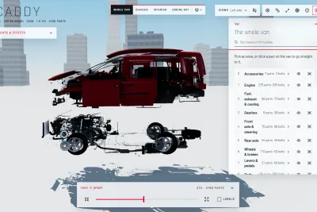
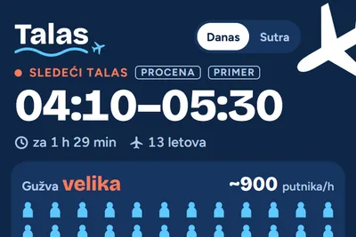
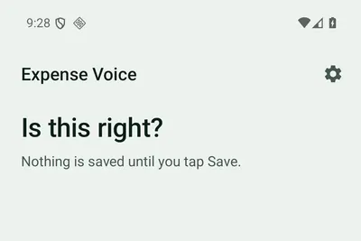
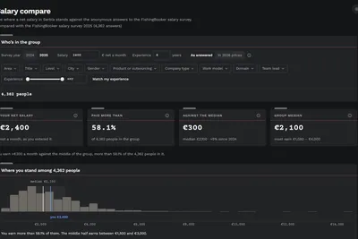
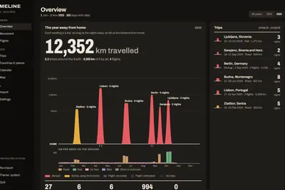
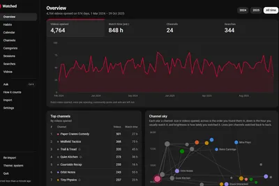
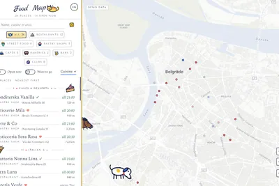

BogdanK0451 — roll 2026
Personal projects from one roll: a 3D studio, phone apps, data analyses, a browser extension and a short film.
Projects
-

01A · VW CADDY STUDIO Interactive 3D studio to take a 2008 VW Caddy apart, part by part, in the browser -

02A · TALAS Phone app that forecasts rushes at Belgrade airport's security checkpoint, in lanes - 03A · SILVERBACK A 141-second comedy slasher short in Blender, starring a scanned wooden gorilla statue
-
 04A · FINANCE
A private dashboard that turns ten years of budget spreadsheets into clear analysis
04A · FINANCE
A private dashboard that turns ten years of budget spreadsheets into clear analysis
-
 05A · KP OGLAS POMOĆNIK
Chrome extension that writes a KupujemProdajem ad from photos and fills the posting form
05A · KP OGLAS POMOĆNIK
Chrome extension that writes a KupujemProdajem ad from photos and fills the posting form
-

06A · EXPENSE VOICE Say an expense out loud and it lands as a row in your own Google Sheet -

07A · SALARY COMPARE See where a net salary in Serbia stands against thousands of anonymous survey answers -

08A · TIMELINE Hard numbers from a Google Timeline export: nights away, trips, flights and kilometres -

09A · WATCHED Statistics from YouTube watch history: habits, channels, sessions and rabbit holes

-

11A · FOOD MAP A private, hand-drawn map of the food places you follow on Instagram, with opening hours - APK checkPure-Python script that inspects an Android APK without running anything from it 12A · APK CHECK
- Bookmark cleanupSingle-page tool for triaging a large browser bookmarks export into keep and remove 13A · BOOKMARK CLEANUP